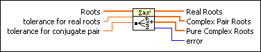
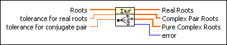

Roots Classification VI
Owning Palette: Polynomial VIs
Requires: Full Development System
Classifies Roots into real, complex conjugate pair, and pure complex roots.

 Add to the block diagram Add to the block diagram |
 Find on the palette Find on the palette |
Owning Palette: Polynomial VIs
Requires: Full Development System
Classifies Roots into real, complex conjugate pair, and pure complex roots.

| Add to the block diagram |
Find on the palette |
 |
Roots contains the complex roots for a polynomial. |
 |
tolerance for real roots specifies the tolerance for classifying real roots. If the imaginary part of a complex root is less than or equal to tolerance for real roots, the VI classifies the complex root as a real root. The complex root (a2 + b2i) is a real root if the following relationship is true.
|b2| |
|
tolerance for conjugate pair specifies the tolerance for classifying complex conjugate pairs. The VI classifies the complex roots Z0 and Z1 as a complex conjugate pair if the following relationship is true.
|(Z0 – Z1)/Z0| |
 |
Real Roots returns the real roots. |
 |
Complex Pair Roots returns the complex conjugate pair roots. |
|
Pure Complex Roots returns the pure complex roots. |
 |
error returns any error or warning from the VI. You can wire error to the Error Cluster From Error Code VI to convert the error code or warning into an error cluster. |
 tolerance for real roots
tolerance for real roots